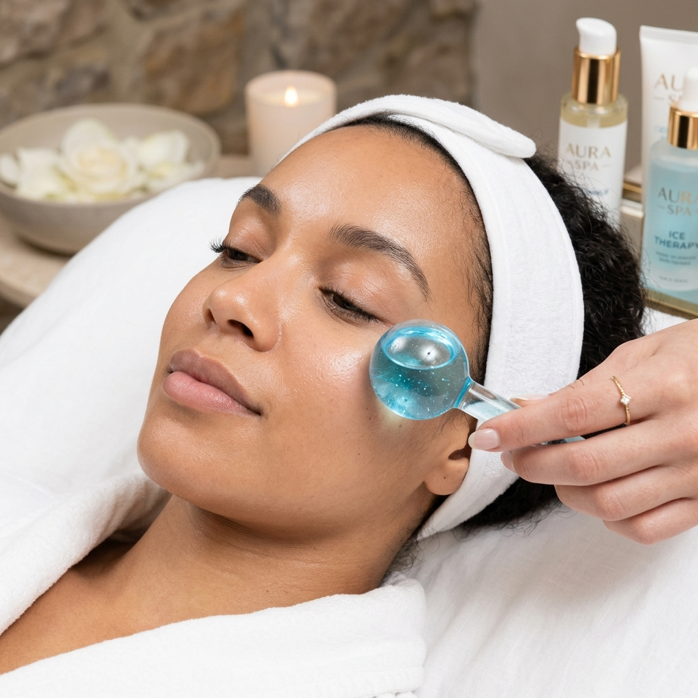
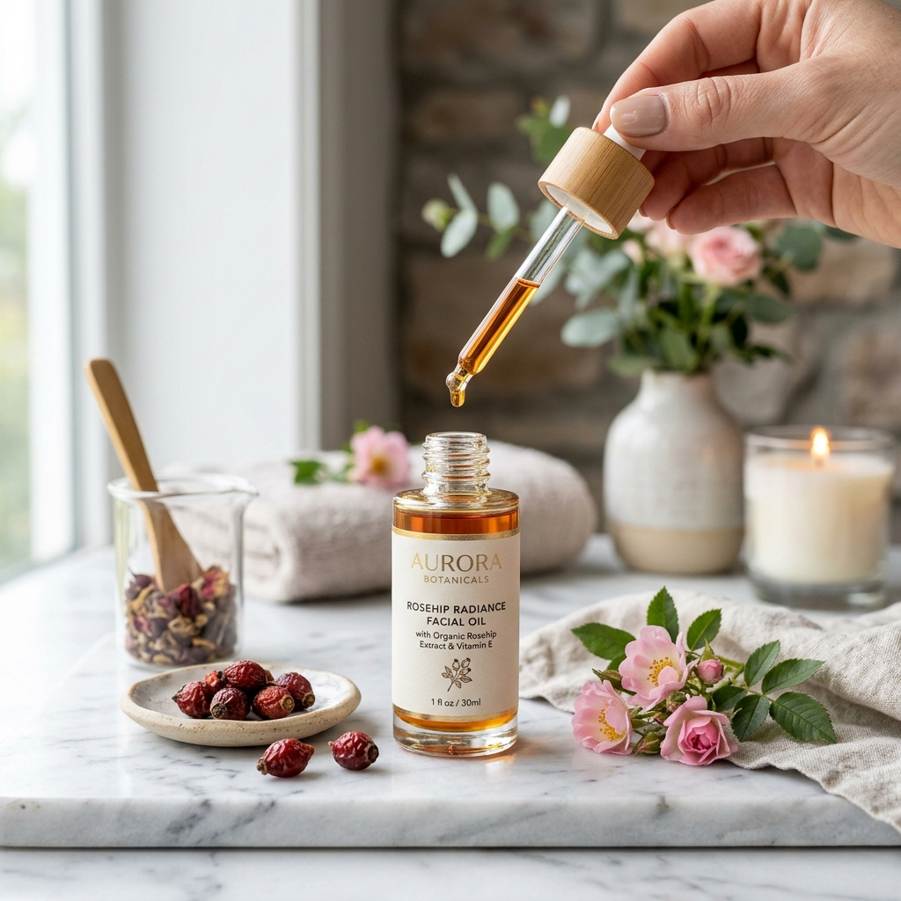

🗓️ Tu Calendario de Transformación
14 días de drenaje linfático facial y ejercicios crio-activos.
Rutinas Diarias Guiadas

Técnica Crio-Drenante de Mañana
Masaje escultor express con cucharas frías o rodillo para activar la circulación sanguínea.

Fórmula Aclarante con Rosa Mosqueta
Técnica de presopuntura para despigmentar ojeras oscuras o moradas.

Levantamiento de Párpado y Mirada Cansada
Ejercicios isometricos de párpado superior para eliminar la retención de líquidos.
⚡ Rutinas Express (5 Minutos)
Técnicas rápidas para usar antes de un evento o al despertar.
❄️ Desinflamación Flash con Hielo
Ideal si amaneciste con párpados hinchados por retención de sal o desvelos.
🌙 Drenaje Linfático Nocturno
Relaja la tensión periocular y estimula la síntesis de colágeno natural.
🌟 Testimonios de la Comunidad
Resultados reales en 14 días practicando 5 minutos diarios.

"Tenía las ojeras muy moradas por el trabajo en computadora. El masaje de la mañana con rosa mosqueta me cambió la cara por completo en solo 1 semana."

"La mejor inversión en Telegram. Los videos explicativos son super cortos y los ejercicios facilísimos de hacer."
❓ Preguntas Frecuentes
Todo lo que necesitas saber antes de empezar tu tratamiento.